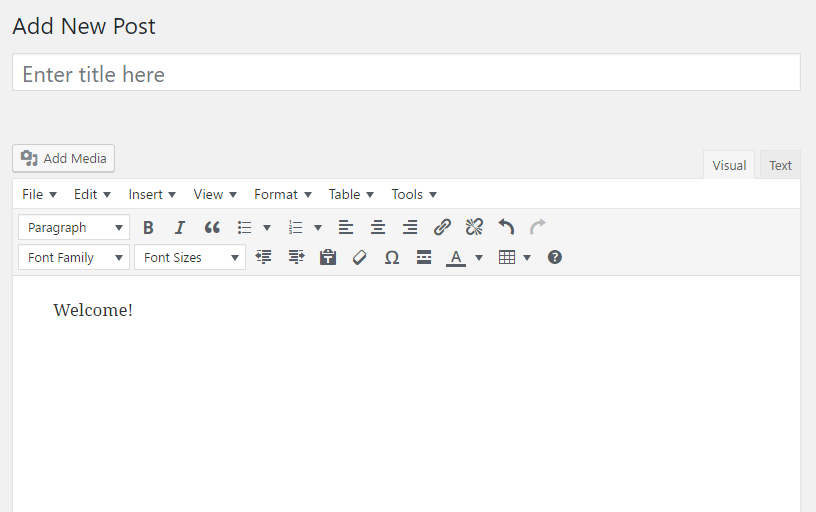
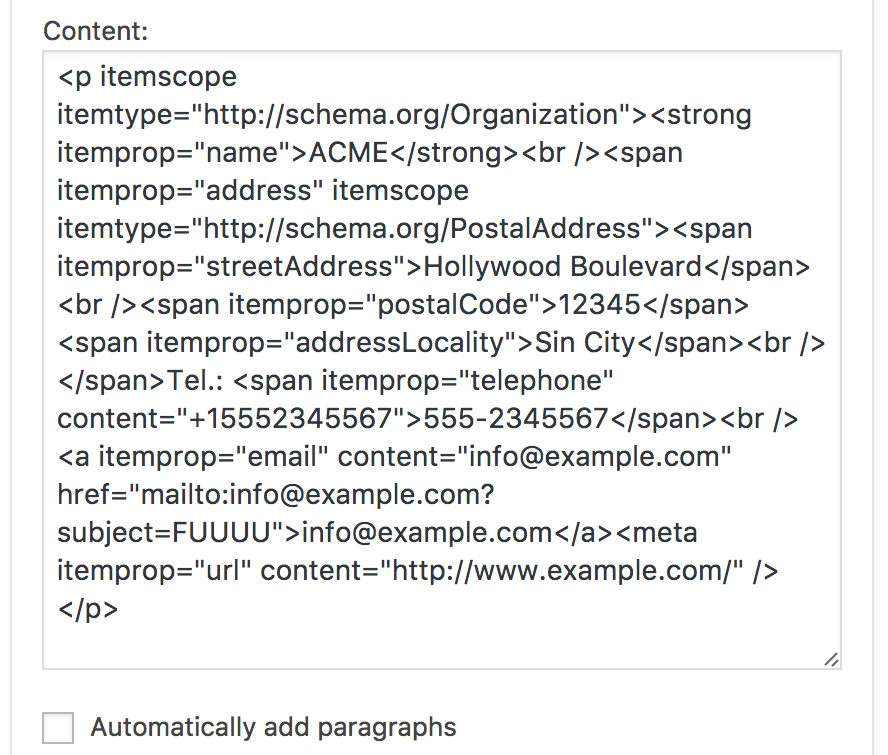
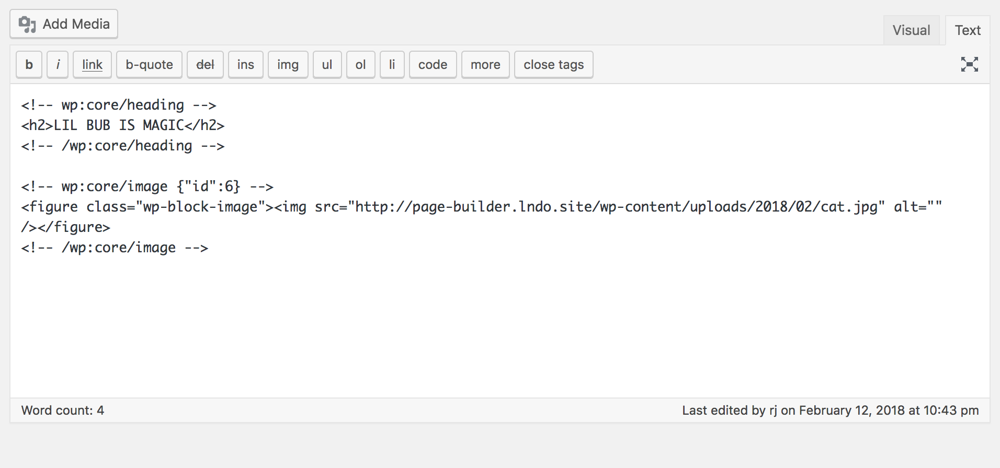
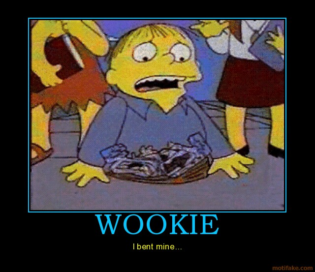

An introduction to WordPress Gutenberg Editor
by RJ Mey
Web developer, American Expedition Vehicles
Presented Febuary 12th 2018
I don't want to over-sell it, but Gutenberg is basically better than 10 superbowls.
At its most basic, Gutenberg is a new editor for WordPress
The main principle of Gutenberg is blocks. There are sections of contentent that be edited with a WYSIWYG editor
W.Y.S.I.W.Y.G.:
A tech term dating back to the 90s. "What you see, is what you get".
What is Gutenberg Changing?
WordPress has had an internal editor called TinyMCE

TinyMCE has served the WordPress community well for a number of years, but it's not the best tool for page layouts
We've had to jam lots of html into the WordPress editor over the years, and it gets messy.

Gutenberg cleans this up

This looks a lot like page builders that already exist
- Beaver Builder
- WP Bakery Page Builder (Visual Composer)
- Page Builder by Site Origin
Page builders can be a great tool for WordPress users who don't have coding experience.
But they come with some disadvantages
- Page loading times can suffer
- They cost money
- You're locked in
What do you mean locked in?
Moving the content from a page builder to another site is very difficult. Your content and it's presentation become mixed together, and it's very hard to extract.
I've got it! I'll just build everything using PHP, CSS, a pile of custom fields, and some jQuery to smoothen out the rough edges!
I do this. It's been how WordPress developers have been working for a while now, and it has some disadvantages.
- The user has very little control
- Page template files become a mess
- We're locking ourselves in again
What makes Gutenberg so special?
It boils down to one thing: standards.
What happens if we turn off Gutenberg?
Gutenberg lets us not only have the kind of editing exprience that we need, it does it in a way that is open.
When Gutenberg is done, we'll be able to move content between Gutenberg compatible themes with few modifications.
Because Gutenberg mostly just adds html comments to our markup, our content is pretty separated from our presentation in a very portable way
Unfortunately it hasn't been all fun and games
Some users are very unhappy with Gutenberg.
Sorry about the low-res
Gutenberg could break a lot of older WordPress sites.

Remember all those weird hacks and gizmos we've been using?
About that...
Because Gutenburg is changing so much, in such a drastic way, we're not really sure how it's going to go.
What does this mean for WordPress theme developers?
We've been thrown into chaos and it's wonderful
I know that this seems scary, but don't panic
It's going to be better for the users in the long run, plus this is a unique opportunity to learn new skills
Also if you can learn this stuff now, you'll be one step ahead of everyone who waits.
Oh yeah. Learn JavaScript
1. Download Gutenberg and try it out.
But be careful. Gutenberg isn't ready for prime time yet.
2. Complain (constructively)
The Gutenberg development team has taken a lot of flack.
Remember that it's under construction
Just because you see a huge error, doesn't mean that nobody is going to fix it.
Zac Gordon has created a promo code just for people at this MeetUp!
Special Page here: https://gutenberg.courses/wpdetroit/